| |
| 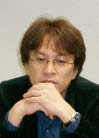 |
|
|
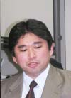 |
|
 |
| 「自分の仕事も終わってないのに今週もまた東京か〜」「オレなんか目の下にクマが…」などという会話がなされていたか定かではありませんが、毎週のように京都から東京までやって来ては、受講生をビシバシ指導していた任天堂の講師陣。自分たちのプロジェクトと同時進行でハードスケジュールをこなしていたツワモノぞろいです。学生さんたちとのやりとりは和気あいあい、しかし気になるその実情はいったい？ セミナー終盤を迎え、ひきつった笑顔の下に隠れている本音とは？ 中田さんは遠く京都からテレビ会議システムで参戦。今回のインタビューはハイテクです！ |
|
N.O.M みなさんが講師に抜擢された理由はなんでしょう？
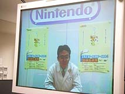中田 私が事務局から講師の選定を頼まれました。山上はすんなりOKしてくれたんですが、青沼が「忙しい」と固辞しまして。
青沼 僕は過去のセミナーでも講師をしていて、その大変さを知っていたので即答できなかったんですよ。自分の仕事もあってのことですから。
辻村 私はこのセミナーのOBだったので、自分から関わらせて欲しいと頼みました。
N.O.M 毎週、京都から教えるために東京へ？
青沼 テレビ会議システムがあるので、これで京都から講義しても良かったんですが。やっぱり目の前に生徒がいないと、手応えないんですよね。
山上 講義については青沼と話し合って、どういう視点から教えるかを決めたりしていました。そのための教材も作ったりして…。
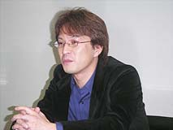青沼 この人(山上)なんか、講義の予行演習までしてるんですよ。時間配分もキッチリだし。僕は適当にやってたから、「あらら時間が余っちゃったよどうしよう〜」なんて感じだったのに。いやらしいなあ(笑)。
山上 だって、講義内容をビデオで録ってるんですよ！ そんなことされたらマジメにやらないと、なにを言われるかわからなくて怖いじゃないですか(笑)。
N.O.M なぜ録画を？
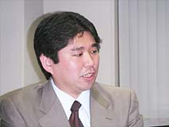青沼 たぶん、本社でみんなに見せて「バッカでーこいつ。あんな偉そうなこと言ってらー」とか笑い者にされてるんですよ(笑)。
辻村 いやいや、学生向けの講義とはいえ、社員としても勉強になる部分が随所にあるということですよ。改めてゲーム作りの基本から向き合うことでも、学べることは沢山ありますから。
山上 いいフォローだ。そういうことにしとこう(笑)。
N.O.M 任天堂側は、このセミナーを通してなにを教えたかったんでしょう？
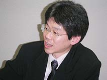山上 現場に即投入してもやっていける人、実戦に耐えうる人材を学生のうちに育成することだと思います。個人的には、成功することや売名のノウハウを教えるのではなくて、自分が本当にやりたいことを聞いて、それが実現できる方向へ手助けする、そんなつもりでやっていました。
中田 近頃の制作現場が肥大化しているという現状があります。会社に入ったら全体の流れがわからなくて、わけもわからず自分の作業をする…ということになってしまいかねない。なので、学生のうちに小規模人数でゼロからチームプレイで制作するということを体験して欲しかったんですね。グループとして制作するということを経験した上で、社会に送り出したいと。それによってゲーム業界全体が活性化してくれれば、という願いもあります。
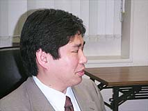辻村 こちらからすると、若い未経験の世代の視点から見たゲーム作りというのを教えてもらいました。色々な発見がありましたよ。
青沼 教える、という感覚ではやっていなかったんです。一緒に作ってる…という感じ。
山上 見守るというのが近いですね。失敗しそうだなとわかっていても、事前に教えずに見てるわけです。失敗したらそこで初めて口を出す。「あの時点の選択がこうだったから、こうなったんだよ」と。すると学生は次回から決して同じ失敗をしなくなるんですよね。こういうセミナーだからこそ、あえて失敗させるという冒険ができるわけです。これが会社だったら、コストや時間の問題で先回りして止めますよね。会社の現場においては、失敗は絶対にあってはならないことですから。僕らにとってもこれは壮大なシミュレーションというか、現場に反映させられるものがありました。
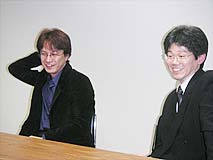N.O.M 親みたいな感じですね。転ぶのを黙って見てるような。
青沼 『親』じゃなくて『お兄さん』です(笑)。…そんな風に子育てできてる？
山上 できてない(笑)。
N.O.M 夏に１泊２日の合宿があったとも聞きましたが。
山上 ４つのグループに分けて企画をプレゼンテーションさせました。前半の講義では企画書の書き方やプレゼンのやり方も勉強したので、それを生かした子もチラホラいましたよ。
青沼 びっくりしたんですが、プレゼンがみんな面白かったんです。場を沸かせようとするサービス精神みたいなものが旺盛で、見る側を飽きさせなくて。長丁場でしたが、最後まで楽しく見られました。
中田 予想以上に学生たちのレベルが高かったので、「いまのセミナーに当時の自分が来ても、絶対入れないよね」って話題は何度も出ました(笑)。
N.O.M 学生さんたちを１年間見てきて、感じたことはありますか？
中田 今回の学生たちは、色々なもののなかからここを選んでいます。「数あるエンターテインメントのなかで、なぜゲームという媒体を表現方法として選んだか」がはっきりしている。ゲームは、彼らのなかではエンターテインメントのひとつなんです。
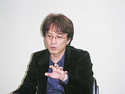青沼 以前のゲーム業界って、華やかでカッコイイみたいなイメージがつきまとってたと思うんです。でも最近は実情がバレてきている。彼らは「現場って本当は大変なんだ」ということが、ちゃんとわかっててここへ来てるんです。実際やってみると想像以上に大変だと思いますが。
山上 思った以上に打たれ強い面があって、驚いたりもしました。みんなで作品を作る過程で、自分のなかで沢山の葛藤が発生して、ものすごく苦しむわけですよ。でもそれはいわゆる『産みの苦しみ』で、そこを乗り越えて作品なり形なりが出来上がった時の喜びは、一度体験したらやめられないものなんですね。ここはそこまで含めて学んでいける場所ではあると思います。
青沼 なんでもよく覚えちゃうから、滅多なこと言えないんですよ。後々になって「あの時こう言ったじゃないですか！ なんで今回は違うんですか？」って突っ込まれたりして。こっちは全然覚えてないから、「あの時はあの時で…」みたいに焦ったり(笑)。
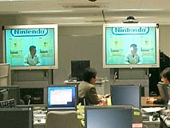中田 なんでも吸収していこうとするハングリーさみたいなものがすごいですね。あらゆることを知りたがる。
青沼 彼らはある意味ライバルなんですよ。僕らは制作の現場で実際にやっていて、彼らがここに入って来たらうかうかしていられないって考えたりしますよね。…いまのうちに潰しておかないとダメかな(笑)。
N.O.M レベルというか、技量みたいなものはどうでしたか？
青沼 やっぱりデジタル世代ですよね。器用です。ツールも一度教えればすぐにマスターするし、フットワークが軽いです。自分だったらこうはいかなかったでしょうね。
中田 進歩が飛躍的なんですよね。コツをのみこむと、どんどんステップアップが加速していく。
N.O.M 自分たちの世代との違いなどは感じましたか？
山上 技術的なことはとても早いし、頭もいいんです。だけど、コミュニケーションが取れない。ネットや携帯が発達して、メールやチャット、BBSでは言える。でも、目と目を合わせて自分の気持ちや考えを伝える、わかってもらうということができない。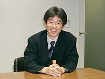それで、グループ内で意見が衝突した時にものすごく苦しい思いをするんです。
N.O.M そういう場合はどうアドバイスされるんでしょう？
山上 「(渋谷)センター街に行って、100人ナンパしてこい！」と(笑)。あの辺のお姉ちゃんの気を引けるぐらいなら、グループ内で意志を伝えたり、短時間のプレゼンで相手の気持ちを捉えることなんて簡単だということで。極端な例えですが、ナンパって一瞬の勝負じゃないですか。２、３秒で相手の気を引かないといけないでしょう。だから行ってこいと言うんですが、「できませんよ〜」って(笑)。
N.O.M すごいアドバイスですね(笑)。
N.O.M 最近のゲーム制作現場の人材は、どうなんでしょう？
山上 一時期よりも"ゲームオタク"が減りました。７〜８年前は視野の狭い、いわゆるオタクがすごく多くて。この業界は大丈夫なのかなと思っていたこともあったんですが、最近はそうでもないです。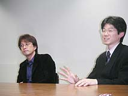いまはバランス感覚のある人が増えました。女性でも、オシャレや人間関係などと同列にゲームがある、生活の一部としてそれがあるという人が多いですよね。
青沼 ある意味では個性的な人、とがってる人が減りましたね。いまはこぢんまりしてまとまってる感じ。どっちがいいというわけでもないんですよね。最近のゲームって色々なことをやり尽くしてしまった感があって、業界全体がギスギスしてるんです。でも、学生たちを見てるとすごく楽しそうにやっている。一所懸命で苦しんだりしてるけど、ひとつひとつの作業が楽しそう。これは自分を含めた業界全体への問題提起でもあるんですが、やっぱり作り手が楽しまなければユーザーに楽しんでもらえないんです。そういう部分でも、学生たちにはすごく勉強させてもらいました。
N.O.M 面接ではどういうことを主眼に選定されたんでしょう。
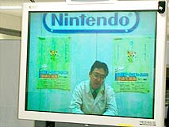中田 やはり偏りすぎていない人です。もちろん、知識がなさすぎる人も無理なのですが。現場はチームプレイなので、自分の考えややり方に妙なこだわりを持っている人は、入ってもやっていけないんです。なによりもまず協調性ですね。面接官は４名いたんですが、光るものを持ってるなと感じる子には、ほかの面接官も同じようなことを感じ取っているんです。
山上 我が強いとやっていけないんですよね。「人の話を聞けよ！」と言いたくなる場面も多々ありましたが(笑)。自分のことばかり押し出しても、いいものはできません。講師や仲間など、他人の意見に耳を傾ける度量がないと、集団のなかで続けるのは難しいんです。
N.O.M なかには途中で辞めた学生さんもいるんですね。
山上 やっぱり怖がりなんですよね。自分の考え方が相手に受け入れられなかった時、それが自分全体に対する否定だと受け取ってしまう。グループでなにかを作るということで、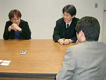これまでの自分のスタイルを変えて別の考えを受け入れ、そしてより良いものにしていくということが絶対に起きるんですが、それがどうしてもできないという。
青沼 ここにいる学生たちは、トントン拍子に大学まで上がってきて、挫折らしきものを知らないで成長してしまってる子が多いんですよ。だから、自分が認められないとちょっとでも感じると、ものすごく怖くなって逃げ出したくなるんです。表面上は偉そうにカッコつけてるけど、内心は…みたいな感じです。
山上 この１年で劇的に性格が変わった子もいます。学生たちと講義の後で飲み屋によく行くんですが、そこで大泣きしたり。「カミヤマさん！ 僕は辛いんです！」って。「オレはヤマガミだ！」って言っても、酔っぱらいで高ぶってるからまた「わかってますカミヤマさん！ 僕はどうしたらいいんですか！」(笑)。
中田 みんな明るいので、そういう部分のコミュニケーションはスムーズでした。講師たちと生徒の同じ目線でのやりとりで、本音や辛い部分を吐き出したり相談できて、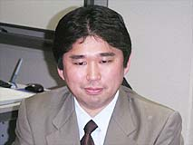色々な場面を乗り切れたというのはあったと思います。
辻村 私はここの生徒たちの相談役みたいなことをずっとしていたんですが、やっぱり親身になって聞いてあげると心を開いてくるし、変わっていきますよね。
N.O.M 来年度はどういう人たちに来て欲しいですか？
中田 どうしようかなと思ってるなら、迷わず進め！ と。行動して受けて入ってくれば、えらく得します。絶対に損はさせません(笑)。
辻村 ここはほかの環境では得られない経験が沢山できます。『任天堂で暴れてみたい！』というアツさのあるヤツ、積極性や自己アピールのある人に来て欲しいですね。
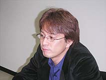青沼 表現に対してスケベである人です。スケベと言ってもエッチな意味じゃなく、誉め言葉として(笑)。表現に貪欲であるという意味ですね。ゲームにこだわらずに「こうしたい、もっとこれをやりたい」という欲求の強い人。ここは自分が思い描いた"変なもの"を具現化する場ですから。
山上 「理系じゃないとダメなんじゃないかな」と思ってるなら、それは間違いです。何学部でもいいから、かかって来い！ と言いたいです。とにかく来ればできるように教えるからと。グループって理系ばかりじゃ成り立たないんです。文系の頭を持った人もいないと、バランスが取れないわけです。学部や専攻にこだわらず、なにかやってみたいという人にどんどん来て欲しいですね。
N.O.M どうもありがとうございました！
|
|
|